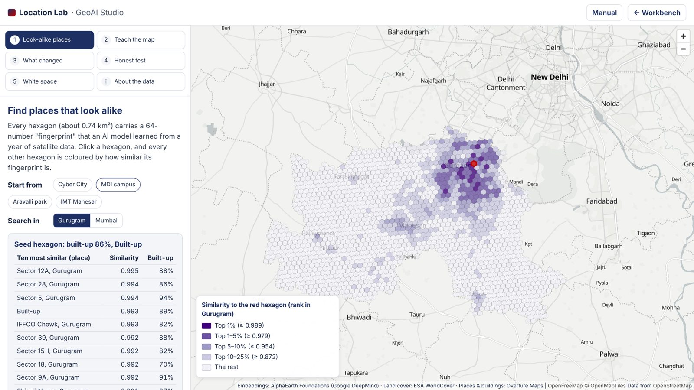
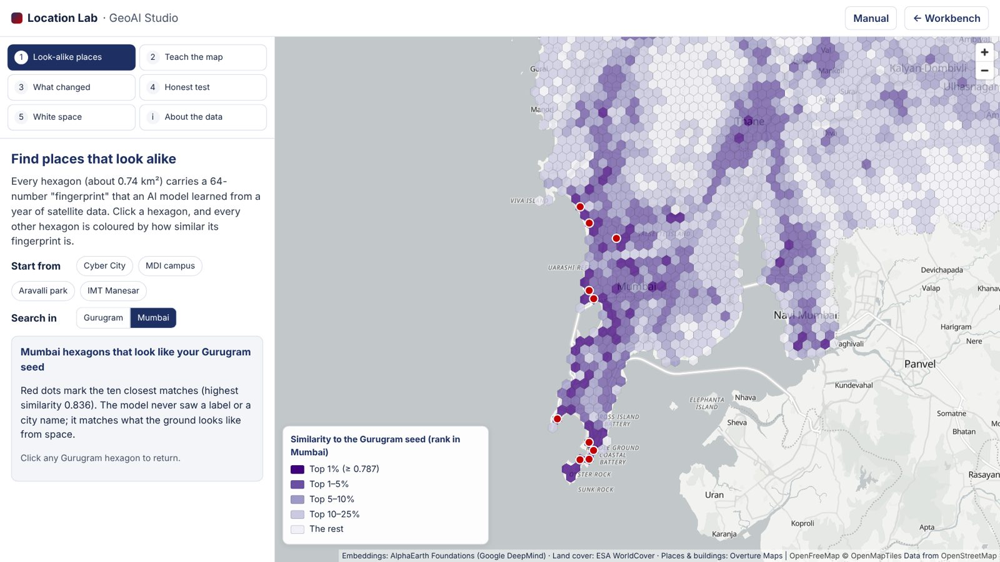
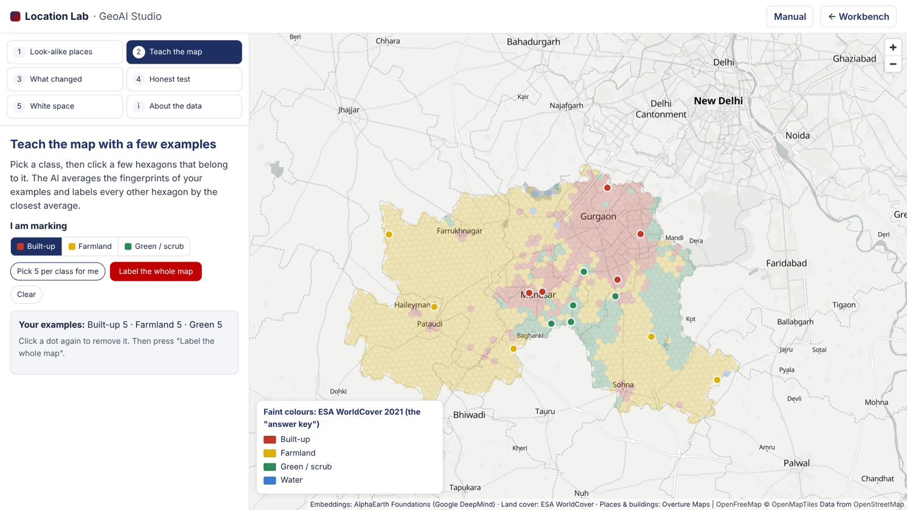
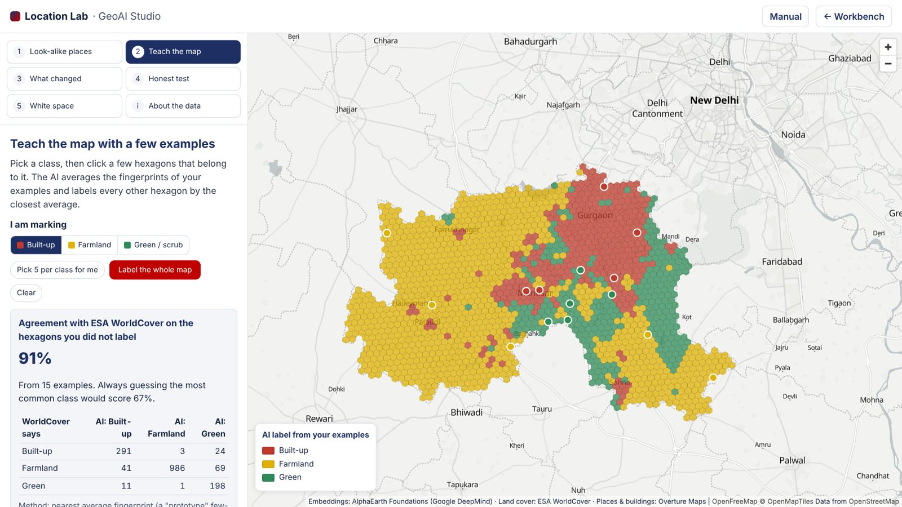
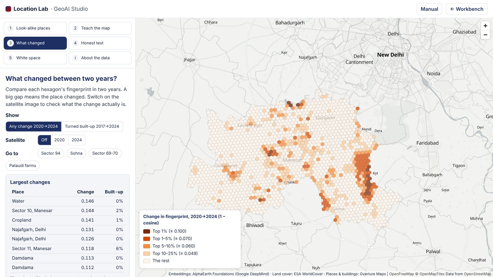
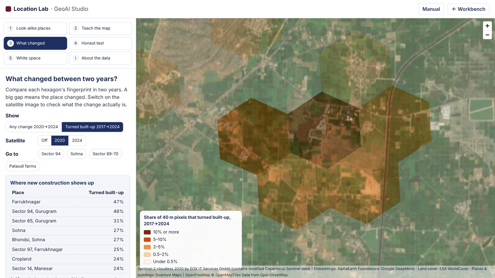
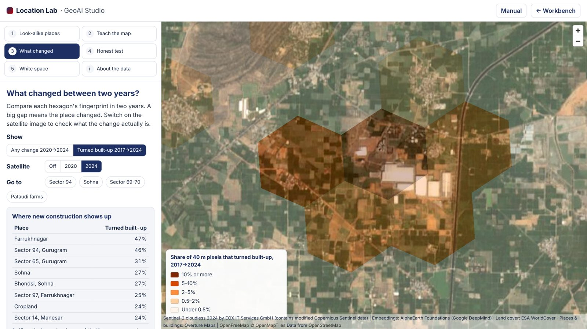
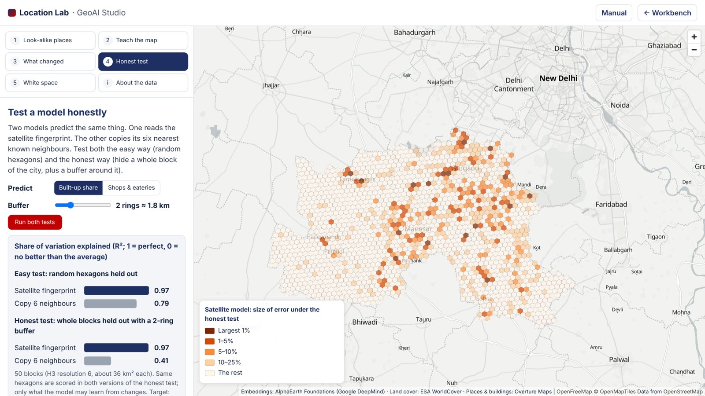
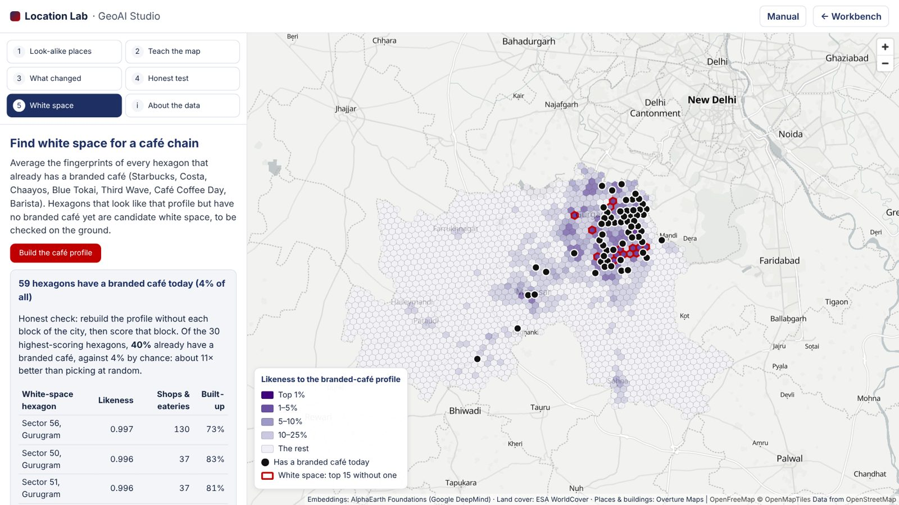
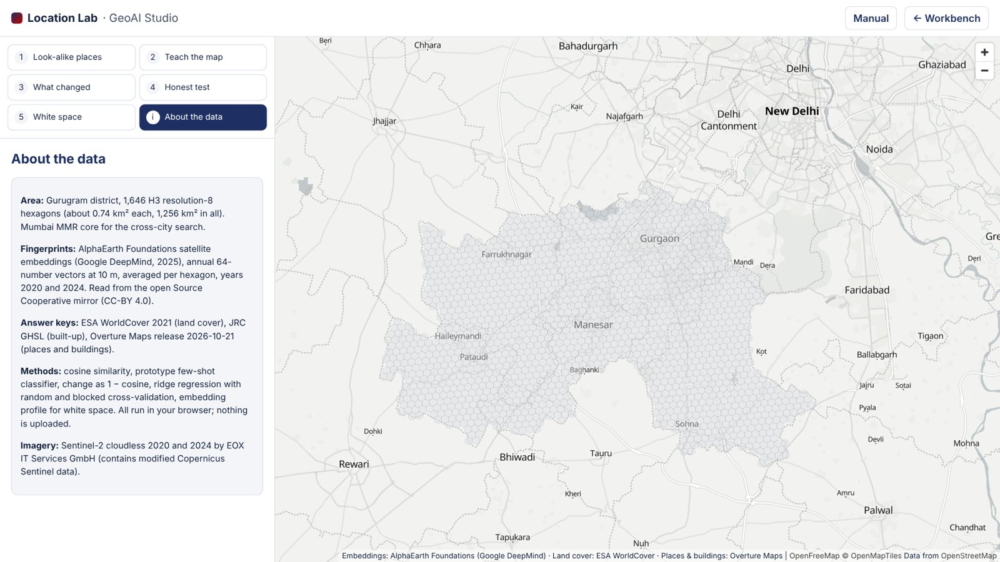

GeoAI Studio: a manual
Location Lab · LMgB Session 12, GeoAI: concepts and applications · Open GeoAI Studio · Video walkthrough (3 min)
What this is. GeoAI Studio is a separate tab of Location Lab. It shows five GeoAI techniques on real data for Gurugram district, with no code. Everything runs in your browser; nothing is uploaded. Open it from the Location Lab header (GeoAI) or go straight to quantng.github.io/location-lab/geoai/. Use a laptop with Chrome or Edge.
0 · The idea in one paragraph
The district is split into 1,646 hexagons of about 0.74 km² each (Uber's H3 grid, resolution 8). For every hexagon we have a fingerprint: 64 numbers that Google DeepMind's AlphaEarth Foundations model learned from a whole year of satellite data (optical, radar, elevation, climate). Places that look alike from space have similar fingerprints. We compare two fingerprints with cosine similarity: 1 means identical, lower means more different. The five tabs use these fingerprints to find, label, monitor, test and decide.
| Tab | Business question | Technique |
|---|
| 1 Look-alike places | Where else looks like my best location? | Similarity search on embeddings |
| 2 Teach the map | Can I map my own categories from a few examples? | Few-shot "prototype" classifier |
| 3 What changed | Where is new construction happening? | Change detection between years |
| 4 Honest test | Will this model work in a new town? | Random vs spatial block cross-validation |
| 5 White space | Where should the next outlet go? | Embedding profile of a brand |
1 · Look-alike places
- Click the 1 Look-alike places tab (it opens by default).
- Press a starting point (Cyber City, MDI campus, Aravalli park, IMT Manesar) or click any hexagon on the map. The seed turns red.
- Read the map: darker purple = more similar. The legend gives the similarity cut-off for each colour (top 1%, 1–5%, 5–10%, 10–25%).
- Read the panel: the ten most similar places, their similarity, and their built-up share, plus the district average for comparison.
- Press Mumbai next to "Search in" to search the same seed among 6,966 Mumbai hexagons. Red dots mark the ten best matches. Click any Gurugram hexagon (or press Gurugram) to come back.

Seed: MDI campus. The ten most similar places are dense sectors of old Gurugram.

The same idea across cities: Mumbai places that look like the Gurugram seed.
Read it as a manager: look-alikes are a shortlist for field visits, not a decision. Similar built form does not guarantee similar customers.
2 · Teach the map
- Open 2 Teach the map. Faint colours show ESA WorldCover 2021, the "answer key" we will compare against.
- Choose a class: Built-up, Farmland or Green / scrub.
- Click a few hexagons that belong to that class. A coloured dot marks each example; click it again to remove it. Repeat for the other classes. (For a quick demo, press Pick 5 per class for me.)
- Press Label the whole map. Every hexagon gets the class whose average fingerprint is closest.
- Read the agreement score (share of the hexagons you did not label where the AI agrees with WorldCover), the baseline (always guessing the commonest class), and the table of agreements and disagreements.

Fifteen examples, five per class.

The whole district labelled from fifteen examples.
Note: WorldCover is itself an AI map. Treat disagreements as places to look at, not automatically as AI errors.
3 · What changed
- Open 3 What changed.
- Any change 2020→2024 colours each hexagon by how much its fingerprint changed (1 − cosine). This includes crops, water and quarries.
- Turned built-up 2017→2024 shows the share of 40 m pixels where an AI built-up score rose sharply: a targeted view of new construction.
- Use Go to to jump to Sector 94, Sohna, Sector 69–70 or the Pataudi farms.
- Switch Satellite to 2020 and then 2024. The hexagons turn semi-transparent so you can see the ground. Decide for yourself whether each flag is real construction or a false alarm.
- Click any hexagon for a pop-up with its numbers.

Any change, 2020 to 2024.

Near Sohna, satellite 2020.

Near Sohna, satellite 2024: new warehouse roofs under the flagged hexagons.
4 · Honest test
- Open 4 Honest test.
- Choose what to predict: Built-up share (WorldCover 2021) or Shops & eateries (Overture Maps places, as log of 1 + count).
- Set the Buffer slider: how many rings of hexagons (about 0.9 km each) around each test block are also hidden from training.
- Press Run both tests (about 10–20 seconds).
- Compare the two models (satellite fingerprint vs copy six nearest neighbours) under the easy test (random hexagons) and the honest test (whole blocks held out). R² is the share of variation explained: 1 is perfect, 0 is no better than the average.
- The map shows where the satellite model makes its largest errors under the honest test.

Built-up share, 2-ring buffer: the neighbour model drops from 0.79 to 0.41; the satellite model stays at 0.97.
Why it matters: a model that looks good on random tests can fail in a new town. Always ask how accuracy changes when whole areas are hidden.
5 · White space
- Open 5 White space and press Build the café profile.
- The app averages the fingerprints of the 59 hexagons that list a branded café (Starbucks, Costa, Chaayos, Blue Tokai, Third Wave, Café Coffee Day, Barista) into one profile.
- Purple shows how closely each hexagon resembles that profile; black dots mark cafés today; red outlines mark the 15 most café-like hexagons with no branded café yet.
- The panel reports an honest hit rate (profile rebuilt without each block) and a shortlist with place names, shops & eateries and built-up share.

White space for a café chain.
Next step: visit the shortlisted sectors; check rents, footfall, parking and competitors; confirm listings, which can be incomplete.
About the data

- Fingerprints: AlphaEarth Foundations satellite embeddings V1 (Google DeepMind), annual 2017–2024, 10 m, CC-BY 4.0, read from the Source Cooperative mirror; averaged per H3 resolution-8 hexagon (2020 and 2024 shipped in the app; 2017 used for the 40 m construction layer).
- Answer keys: ESA WorldCover 2021; JRC Global Human Settlement Layer; Overture Maps release 2026-10-21 (places and buildings).
- Imagery: Sentinel-2 cloudless 2020 and 2024 by EOX IT Services GmbH (contains modified Copernicus Sentinel data). Basemap: OpenFreeMap, © OpenMapTiles, © OpenStreetMap contributors.
- Methods: cosine similarity; nearest-average-fingerprint classifier; 1 − cosine change; ridge regression with random 5-fold and H3 resolution-6 block cross-validation with ring buffers; embedding profile with block-held-out evaluation.
Session 12 task (before Session 13)
- Look-alike: pick a place you know; find its ten look-alikes. Do they match what you know?
- Teach: label 5 hexagons per class yourself (not the auto button). Record the agreement score.
- Change: find one true change and one false alarm; screenshot both satellite years.
- Honest test: run buffers 0, 2 and 8 for shops & eateries; write two lines on what the gap means for a chain entering a new city.
- White space: pick one red-outlined hexagon; in 100 words, say what you would check on the ground and why.
Submit one slide per step (five slides) by email before Session 13.